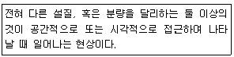

화훼장식기사 (2017-08-26 기출문제)
1과목: 화훼재료 및 형태학
1. 지상경 중에 줄기가 단축되어 마치 구(球)모양을 하고 있응 위구경(爲球莖)을 가진 식물은?
- 칸나
- 칼라디움
- 디알리아
- 한란
(정답률: 67%)

2. 다음 중 열대고지기후형에 해당하는 것은?
- 에델바이스
- 새우난초
- 수선화
- 다알리아
(정답률: 43%)
3. 다음 식물 중에서 꽃차례가 총상화서인 것은?
- 루피너스
- 칼라
- 스파티필럼
- 국화
(정답률: 73%)
4. 다음 중 상록성 화목류가 아닌 것은?
- 목련
- 식나무
- 협죽도
- 동백나무
(정답률: 74%)
5. 다음 중 춘파 1년초가 아닌 것은?
- 팬지
- 과꽃
- 봉선화
- 맨드라미
(정답률: 36%)
6. 다음 중 우상맥에 속하지 않는 식물은?
- 수국
- 목련
- 필레아
- 옥잠화
(정답률: 50%)
7. 꽃색 중 노란색을 나타내는데 있어서 직접 또는 간접적으로 가장 큰 영향을 주는 색소는?
- 안토시아닌
- 엽록소
- 카로틴
- 플라본
(정답률: 74%)
8. 춘식 구근으로만 짝지어진 것은?
- 튜울립-히아신스-나리
- 수선화-아마릴리스-칸나
- 다알리아-글라디올러스-글로리오사
- 프리지아-크로커스-상사화
(정답률: 50%)
9. 다음 중 양지식물에 해당하는 것은?
- 베고니아
- 아이비
- 코스모스
- 필로덴드론
(정답률: 80%)
10. 다음 중 건생식물에 해당하는 것은?
- 토란
- 알로카시아
- 미나리
- 채송화
(정답률: 62%)
11. 다음 중 식물체 밖으로 향기를 발산하는 선모를 지니는 식물이 아닌 것은?
- 로즈마리
- 거베라
- 세이지
- 민트
(정답률: 89%)
12. 특이한 모양을 가진 꽃으로 작품에 악센트 역할을 담당하는 꽃의 형태는?
- 폼플라워
- 라인플라워
- 필러플라워
- 매스플라워
(정답률: 81%)
13. 다음 중 무한화서에 속하지 않는 것은?
- 히아신스
- 유채
- 조팝나무
- 튤립
(정답률: 78%)
14. 다음 중 동양란에 해당하는 것은?
- 카틀레야
- 온시디움
- 보세란
- 덴파레
(정답률: 75%)
15. 식물에 있어 향기의 역할이 아닌 것은?
- 증산작용을 촉진하여 생육을 원활하게 한다.
- 많은 곤충들을 유인하여 수분을 조장한다.
- 방향유에는 살균력이 있어 꽃과 잎 등을 보호한다.
- 방향유에는 포함되는 페놀류와 알데히드류는 꽃과 잎의 생체 내에서 화학반응을 조장하기도 한다.
(정답률: 85%)
16. 다음 중 식충식물에 해당하는 것은?
- 돌나물
- 용설란
- 사라세니아
- 알로에
(정답률: 89%)
17. 다음 중 국화과 식물이 아닌 것은?
- 엉겅퀴
- 구절초
- 아네모네
- 거베라
(정답률: 44%)
18. 일장에 관련된 내용으로 가을에 꽃피는 추국을 무슨 식물이라고 하는가?
- 단일식물
- 정일식물
- 중성식물
- 장일식물
(정답률: 79%)
19. 다음 중 삭과에 해당하는 것은?
- 포도
- 진달래
- 딸기
- 장미
(정답률: 67%)
20. 이년초 화훼류에 속하지 않는 것은?
- 색양배추
- 봉선화
- 패랭이꽃
- 디기탈리스
(정답률: 61%)
2과목: 화훼품질유지 및 관리론
21. 식물세포 원형질의 주 구성물질인 단백질의 합성에 기초가 되는 것은?
- 질소
- 염소
- 카륨
- 철
(정답률: 67%)
22. 절화보관 중 도관폐쇄 현상을 일으켜 절화의 수분흡수를 억제시키는 요인은?
- 저온
- 에틸렌
- 미생물
- 이산화탄소
(정답률: 86%)
23. 절화의 물올림 촉진방법으로 옳지 않은 것은?
- 아마릴리스, 칼라, 수선화는 절단면을 넓히기 위해 사선처리한다.
- 국화와 같이 줄기기부가 단단한 절화는 수초동안 줄기기부를 열탕처리한다.
- 초인세티아와 같이 유액의 발생이 많은 것은 불에 줄기기부를 그을러 주는 탄화처리를 한다.
- 단단한 절지류의 수분흡수를 도우기 위해서는 기부를 쪼개어 유관속을 노출시켜준다.
(정답률: 65%)
24. 광도가 낮은 실내환경의 관엽식물 외형에 대한 설명으로 옳은 것은?
- 잎 색깔이 엷은 녹색에서 황록색이다.
- 줄기가 도장한다.
- 잎의 윤곽이 뚜렷해진다.
- 엽장이나 엽폭 등이 넓어진다.
(정답률: 50%)
25. 절화의 외적 품질에 영향을 미치는 것이 아닌 것은?
- 꽃의 화색
- 줄기의 굵기
- 잎의 위조
- 절화 수명
(정답률: 93%)
26. 생육 최적온도가 가장 높은 식물은?
- 국화
- 칼레올라리아
- 팬지
- 칼리디움
(정답률: 40%)
27. 비료의 3요소에 대한 설명 중 틀린 것은?
- 질소(N)은 잎의 비료라고도 하며 잎이 자라는데 많이 이용된다.
- 인산(P)은 탄수화물과 화합물을 형성하여 다른 물질로 쉽게 변화하는데 이용된다.
- 질소(N)은 흡수는 수동적 흡수에 의해 흡수된다.
- 칼리(K)는 줄기를 견고하게 하고 내병충성을 강하게 한다.
(정답률: 69%)
28. 다음 중 화훼의 고온장해의 설명으로 옳지 않은 것은?
- 호흡에 의한 저장양분의 소모가 많아 건물증이 저하된다.
- 장미, 국화 등은 꽃의 형태가 나빠지거나 화색을 선명하게 좋아진다.
- 증산이 많아져 식물체가 마르게 쉽다.
- 심비디움은 화아분화가 억제되며 심하면 화아가 고사되기도 한다.
(정답률: 95%)
29. 수송 시 적당한 온도는 식물의 종이나 상태에 따라 다르다. 다음 중 가장 높은 온도를 요구하는 것은?
- 렉스베고니아
- 디펜바키아
- 국화
- 제라니움
(정답률: 53%)
30. 절화보존제의 주요 성분이 아닌 것은?
- 탄수화물
- 살충제
- 살균제
- 에틸렌억제제
(정답률: 73%)
31. 에틸렌에 대한 꽃의 민감도는 종류에 따라 다르다. 다음 중 비교적 둔감한 꽃으로만 나열된 것은?
- 카네이션, 프리지아
- 나리, 수선
- 금어초, 페튜니아
- 거베라, 튤립
(정답률: 57%)
32. 소비자의 절화취급 요령으로 옳지 않은 것은?
- 구입 후 절화를 깨끗하게 하고 물속에서 절단하여 담가 둔다.
- 목본성 줄기는 주위 온도를 높게 하여 차가운 물에 담근 후 신선도를 회복시킨다.
- 물은 끓여서 식힌 후 침전물을 제거하여 사용하면 좋다.
- 직사광선을 피하고 주위가 건조하면 가볍게 분무해 준다.
(정답률: 85%)
33. 절화의 저온저장에 대한 설명으로 옳지 않은 것은?
- 과실이나 채소에 비해 저장 양분이 적기 때문에 장기 저장이 어렵다.
- 호흡량과 증산량을 감소시켜 신선도를 유지한다.
- 모든 절화는 0~4℃가 최적 저온저장 온도이다.
- 저온으로 유지하되 습도는 90~95%로 높여주어야 한다.
(정답률: 57%)
34. 광선에 따른 종자의 반응에 대한 설명으로 옳은 것은?
- 아게라텀, 금어초는 암발아 종자이다.
- 광선의 기작은 버날린이라는 색소에 의해 작용한다.
- 광아발성 종자의 발아촌진에는 적생광선의 조사가 효과적이다.
- 스타티스, 델피니움은 광발아 종자이다.
(정답률: 57%)
35. 토양수준 중 식물이 이용할 수 있는 수분은 어떤 형태의 수분인가?
- 모세관수
- 결합수
- 중력수
- 자유수
(정답률: 89%)
36. 다음 중 단일조건에서 개화가 촉진되는 식물이 아닌 것은?
- 포인세티아
- 칼랑코에
- 나팔나리
- 게발선인장
(정답률: 63%)
37. 다음 중 토양 pH5.0이하에서 자랄 수 있는 것은?
- 철쭉
- 거베라
- 매리골드
- 제라니움
(정답률: 70%)
38. 프리지아의 수확시기를 설명한 것으로 옳은 것은?
- 1번화의 봉우리가 물들기 직전에 수확한다.
- 1번화의 봉우리가 물들었을 때 수확한다.
- 1번화의 봉우리가 개화되기 시작했을 때 수확한다.
- 2번화의 봉우리가 완전히 개화되고, 3번화과 개화되기 시작할 때 수확한다.
(정답률: 57%)
39. 다음 중 양생식물(陽生植物)로만 나열된 것은?
- 아프리카봉선화, 콜레우스
- 옥잠화, 프리뮬러
- 몬스테라, 동백나무
- 장미, 국화
(정답률: 63%)
40. 소비자가 절화를 구입하여 가정에 가져온 후 취하여야 할 사항 중 옳지 않은 것은?
- 줄기 끝을 물속에서 비스듬히 자른다.
- 포인세티아는 줄기를 절단하면 흰 액체가 나오는데 이것은 수명연장에 도움을 주므로 그대로 화병에 꽂으면 된다.
- 자르는 정도는 기부로부터 약 2~3cm 정도로 한다.
- 목본성 줄기를 가진 꽃은 줄기절단면을 뜨거운 물에 약 60초간 담그면 신선도를 찾게 하는데 도움이 된다.
(정답률: 74%)
3과목: 화훼장식학
41. 화훼장식의 도구 중 고정재료에 관한 설명으로 틀린 것은?
- 접착 테잎:접착력이 강한 방수처리된 테잎형태로 주로 플로럴 폼이나 철망을 고정할 때 사용한다.
- 접착점토:핀 홀더나 침봉, 플로랄폼을 용기에 고정시키는데 사용한다.
- 글루건:글루 스틱을 꽂아 녹여서 사용하며 기온에 상관없이 접착력이 강한 장점이 있다.
- 콜드글루:생화에 안전하게 사용할 수 있으며 튜브타입과 스프레이타입이 있다.
(정답률: 75%)
42. 다음 중 화훼장식 효과에 대한 설명으로 틀린 것은?
- 공간의 화훼식물을 이용한 장식은 아름답고 쾌적한 환경의 연출에 매우 중요한 효과를 보이며, 공기정화역할도 가지고 있다.
- 화훼장식은 외부공공환경의 디자인에서 지역성과 공공성, 계정감을 연출할 수 없다.
- 식물이 있는 공간은 휴식공간으로 제공되며, 사원들의 스트레스를 줄이고 일의 능률과 창의성을 높여준다.
- 식물에 대한 사람들의 심리적 반응으로 인하여 정서적인 안정 및 눈의 피로를 경감시켜 주는 효과가 있다.
(정답률: 79%)
43. 다음 압화에 대한 설명으로 틀린 것은?
- 식물의 수분을 제거하고 눌러서 말린 인공적인 기술의 조형예술이다.
- 두께가 적당하고 수분이 적은 꽃이 압화의 재료로 적당하다.
- 황색, 남색, 자색, 홍색의 꽃은 압화의 재료로 부적당하다.
- 수분이 겉에 있는 식물은 휴지로 닦아 내고 드라이기로 말리지 않는다.
(정답률: 69%)
44. 장례용 화훼장식으로 적합하지 않은 것은?
- 부토니어
- 이젤 스프레이
- 이젤 엠블럼
- 캐스켓 스프레이
(정답률: 84%)
45. 콜라주에 대한 설명으로 틀린 것은?
- 편면에 인쇄물, 천, 쇠붙이, 나무조각, 모래, 나뭇잎 등 서로 이질적인 것을 붙여서 구성하는 미술적 기법이다.
- 1913년경 부터는 파피에 콜라라는 명칭으로 피카소와 브라크에 의해 시도되었다.
- 여러 가지 장식물과 꽃을 사용하여 보존성과 상품성이 뛰어난 장점을 갖는다.
- 콜라주는 색상과 질감의 대비를 표현하며, 입체적 구성만을 표현할 수 있는 꽃 예술 분야이다.
(정답률: 77%)
46. 분식물 장식에 사용되는 용기의 재질에 대한 설명으로 틀린 것은?
- 나무:자연미가 있으며 습기에 의해 형태의 변형이 있을 수 있다.
- 석재:중량감과 내구성 및 안정성은 뛰어나지만 이동이 어렵다.
- 플라스틱:모양, 크기 및 색상이 다양하고 저렴하지만 통기성이 좋지 않다.
- 토분:점토 용기에 유약을 바르고 고열처리하여 만든 것으로 고급스러운 분위기를 연출한다.
(정답률: 71%)
47. 다음 중 플로랄폼에 대한 설명으로 틀린 것은?
- 플로랄폼은 흡수성폼과 비흡수성 폼 2가지로 구분할 수 있다.
- 흡수성폼은 흡수성의 페놀수지를 주성분으로 하며 여기에 발포성 재료를 혼합하여 제조하게 된다.
- 비흡수성폼은 연화한 조직으로 줄기 삽입이 용이하고 견지가 뛰어나며 핫글루로 재료를 부착할 경우 폼이 녹지 않는다.
- 흡수성 폼이 물을 흡수하는 시간은 보통 20~30분 정도 소요된다.
(정답률: 57%)
48. 꽃들을 촘촘하게 구성한 덩어리를 강조하는 형식적인 돔형의 어렌지먼트를 압축한 양식이다. 1815~1848년에 독일과 오스트리아에서 사용되었던 이 디자인 양식은 무엇인가?
- 밀드플레
- 플리미시
- 비더마이어
- 랜드 스케이프
(정답률: 79%)
49. 신부 부케의 종류에 대한 설명으로 틀린 것은?
- 식생적 부케:식물의 운동성, 생육환경을 고려하여 디자인한 부케
- 포멀리니어 부케:많고 다양한 꽃종류를 우아하고 화려하게 디자인한 부케
- 멜리아 부케:꽃잎, 그린잎 종류를 겹쳐서 한송이의 꽃형태로 디자인한 부케
- 스트락쳐 부케:부케표면의 질감, 구조적형태를 강조한 디자인 부케
(정답률: 69%)
50. 다음 중 우리나라 불전공화에 대한 설명으로 옳은 것은?
- 주로 사용되는 재료인 연꽃은 태영을 상징하며 재생을 의미한다.
- 우리나라 불전공화는 고려시대에 처음 전래되었다.
- 고려시대 불전공화는 소박하며 실용적인 표현들을 발달시켰다.
- 조선시대 불전의 수월관음도를 통해 불전공화 양식을 관찰할 수 있다.
(정답률: 71%)
51. 다음 중 식물 염색 시 착색되는 과정에 대한 설명으로 틀린 것은?
- 식물 염색 시 일반적으로 염색매체가 되는 것은 물이다.
- 염색 시 사용되는 염료의 과립이 크고 많을수록 염료의 염색효과는 떨어진다.
- 염료가 식물섬유와 결합되는 과정을 확산이라고 한다.
- 염색은 염료와 식물체간의 상호작용으로 이루어지는데 보통 흡착, 확산, 고착의 3단계로 나눌 수 있다.
(정답률: 67%)
52. 다음 중 화훼장식의 기하학적 형태에 대한 설명으로 틀린 것은?
- 초승달형은 바로크시대에 많이 이용되었던 형태이다.
- 반구형은 대칭적 균형으로 좌우의 시각적무게 비중이 같다.
- 역T형의 기본형은 좌우 비대칭 형태이다.
- 타원형은 곡선을 통한 동적인 느낌을 표현한다.
(정답률: 84%)
53. 화훼장식에서 꽃을 꽂기 전 꽃이나 줄기를 자르거나 정리하는 데 사용되는 도구는?
- 핑킹가위
- 꽃가위
- 플라이어
- 글루건
(정답률: 84%)
54. 서양 화훼장식에서 꽃이 가지는 상징적 의미가 중요하게 사용되었으며, 좌우대칭인 타원형, 삼각형, 원형의 디자인이 대표적 형태로 사용되었던 시대로 옳은 것은?
- 중세시대
- 바로크시대
- 르네상스시대
- 그리스시대
(정답률: 53%)
55. 분식물 장식에 관한 설명으로 틀린 것은?
- 기본적으로 용기와 토양, 식물로 이루어진다.
- 디쉬가든, 테라리움, 공중걸이 토피어리가 이에 해당된다.
- 분식물 장식의 구성형태와 표현양식은 환경조건에 영향을 받지 않는다.
- 현대식 건물에 도입되는 실내정원은 서양식으로 표현되는 경우가 일반적이다.
(정답률: 78%)
56. 한국 꽃꽂이의 특징으로 틀린 것은?
- 자연미 강조
- 선과 여백의 표현
- 계절별 꽃꽂이
- 인공미 강조
(정답률: 73%)
57. 코사지 제작 시 주의사항으로 틀린 것은?
- 코사지의 사용용도, 크기, 색상, 초점을 고려하여 제작한다.
- 사용자의 의상색상에 따른 소재를 사용하는 것도 중요하다.
- 코사지는 주소재가 전체적으로 위를 향하도록 한다.
- 측면과 정면에서의 꽃 표정에 주의하며 입체적인 구성이 되도록 한다.
(정답률: 75%)
58. 건조화를 제작하는 방법으로 틀린 것은?
- 자연건조
- 열풍건조
- 고온건조
- 냉동건조
(정답률: 50%)
59. 일본의 전통 화훼장식 특성으로 틀린 것은?
- 일점구성
- 기교미
- 격식화
- 대범성
(정답률: 67%)
60. 다음 중 꽃다발에 대한 설명으로 틀린 것은?
- 중세시대의 꽃다발의 의미는 장식적인 역할에 치중되어 있었다.
- 나선형 꽃다발의 줄기 길이는 균일하게 제작되는 것이 좋다.
- 평행 꽃다발의 바인딩 포인트는 1개 이상일 수 있다.
- 꽃을 모아 줄기 부분을 끈으로 묶어 다발로 만드는 형태이다.
(정답률: 80%)
4과목: 화훼장식 디자인 및 제작론
61. 화훼장식 디자인 요소와 원리에 대한 설명으로 틀린 것은?
- 비율은 디자인 안에서 부분과 다른 부분들 또는 전체와의 관계를 뜻한다.
- 조화는 통합이 되거나 완전해진 하나의 상태로서 전체 구성이 개개의 부분에 비해 훨씬 두드러진 것을 의미한다.
- 실내공간에서 주위와 대조를 이룸으로써 두드러져 보이는 조각, 조명, 깃발, 분수, 그림, 식물, 꽃꽂이는 공간의 강조가 될 수 있다.
- 규모는 전체 공간이나 구성 내에서 구성요소인 물체의 상대적인 크기이다.
(정답률: 50%)
62. 노란색 추상적인 연상은?
- 순정
- 희망
- 힘
- 불안
(정답률: 71%)
63. 계절별 디스플레이에 사용 가능한 화훼류로 적당하지 않는 소재는?
- 봄-카네이션, 개나리, 프리지어
- 여름-백합, 장미, 해바라기
- 가을-국화, 피라칸사, 비올라
- 겨울-안개꽃, 소나무, 대나무
(정답률: 58%)
64. 프레임 제작에 대한 설명으로 틀린 것은?
- 입체적이며 볼륨감 있는 3차원적인 작품을 만들고자 할 때 적합하다.
- 대형작품을 제작할 때는 많은 양의 꽃이 필요하다.
- 클램핑기법은 소재를 빽빽하게 밀집시키고 그 사이에 다른 소재를 고정시킨다.
- 프라핑기법은 소재를 고정시키거나 지탱시키기 위해 버팀목으로 활용한다.
(정답률: 60%)
65. 조형작품에서 선, 크기, 색, 형태, 공간, 깊이의 요소들이 규칙적이거나 조화롭게 표현되어 시각적 운동을 주는 원리는?
- 강조
- 균형
- 질감
- 리듬
(정답률: 59%)
66. 폼 플라워를 사용할 때 고려해야 할 점은?
- 톡특한 형태의 꽆이므로 맨 위쪽에 시선이 가도록 꽂는다.
- 개성이 뚜렷한 꽃이므로 그 모양이 잘 보이도록 그 주위에 공간을 준다.
- 한 작품에 많이 사용하면 더 효과적이다.
- 작품의 외곽에 배치한다.
(정답률: 72%)
67. 디자인 요수 중 선(line)에 대한 설명으로 틀린 것은?
- 수직선은 정적인 선으로 웅장하고 강인함을 느끼게 한다.
- 수평선은 동적인 선으로 섬게하고 부드럽다.
- 사선은 동적인 선으로 긴장감을 준다.
- 곡선은 동적인 선으로 우아하고 여성스럽다.
(정답률: 79%)
68. 웨스텀 화훼장식의 제작에 대한 설명으로 틀린 것은?
- 수직형은 넓이와 높이가 강조된 디자인이다.
- 수평형은 대칭 또는 비대칭 모두 가능하다.
- 대칭삼각형의 줄기는 방사형으로 구성된다.
- 부채형은 시퀸싱 기법을 이용하면 안정감이 있다.
(정답률: 34%)
69. 줄기배열에 의한 꽃꽂이 형태가 아닌 것은?
- 방사선 배열
- 병렬선 배열
- 교차선 배열
- 형선 배열
(정답률: 60%)
70. 색의 감정과 성질에 대한 설명으로 틀린 것은?
- 가벼운 색이란 명도가 높은 밝은 색을 말한다.
- 명도 차가 작은 배색일수록 약하고 수수한 느낌을 준다.
- 채도가 높은 색은 진출, 팽창해 보인다.
- 색상, 명도, 채도의 차이가 작은 색의 대비가 명시성이 높다.
(정답률: 57%)
71. 도면 및 서류 작성의 내용으로 틀린 것은?
- 기본 설계에는 공간의 형태와 동선, 꽃과 식물을 개략적으로 표현해 주면 좋다.
- 큰 공간의 연출일 경우에는 정면도, 입면도, 투시도의 도면을 작성한다.
- 구체적인 디자인 제시를 위한 다양한 도면과 실물도 필요하다.
- 물체를 위에서 본 것으로 1차원적인 그림으로 나타낸 것을 투시도라 한다.
(정답률: 89%)
72. 디자인 기법 중 묶는 표현기법이 아닌 것은?
- 밴딩
- 클러스터링
- 바인딩
- 번들링
(정답률: 85%)
73. 밴딩기법에 대한 설명으로 옳은 것은?
- 장식을 목적으로 특별한 소재를 강조하거나 변화를 주어 시선을 끌고자 할 때 사용하는 기법이다.
- 먼저 꽂아둔 소재의 바루 뒤 또는 아래에 하나 더 꽂아 입체감을 주는 기법이다.
- 한 덩어리로 묶어 무리지어 강한 이미지를 표현하는 기법이다.
- 같은 소재나 유사한 소재들을 기능적으로 고정하기 위하여 단단하게 묶는 기법이다.
(정답률: 44%)
74. 꽃의 한 송이 한 송이가 손잡이에서 완성되어 움직임을 많이 강조한 부케는?
- 암 부케
- 드롭 부케
- 캐스케이드 부케
- 콜로니얼 부케
(정답률: 36%)
75. 다음 중 전통적인 디자인 형태는?
- 비더마이어
- 뉴 웨이브
- 뉴 컨벤션
- 파베
(정답률: 77%)
76. 절화 장식을 위한 디자인 과정으로 옳은 것은?
- 공간의 특성 조사 분석→주제의 결정→구체적인 구상과 스케치→연습→장식물의 제작→소재구입과 준비→평가
- 구체적인 구상과 스케치→공간의 특성 조사 분석→소재 구입과 준비→장식물의 제작과 포장→운반 및 설치→평가
- 주제의 결정→공간의 특성 조사 분석→구상과 스케치→도면 및 서류 작성→연습→소재 구입과 준비→장식물의 제작과 포장→운반 및 설치→평가
- 주제의 결정→구체적인 구상과 스케치→공간의 특성 조사 분석→연습→소재구입과 준비→장식물의 제작과 포장→운반 및 설치→평가
(정답률: 65%)
77. 식물의 건조 및 가공방법에 대한 설명으로 옳은 것은?
- 자연건조율은 온도가 높을수록, 습도가 낮을수록 빨라진다.
- .이삭 소재는 완전히 성숙된 것을 채취한다.
- 누름건조는 입체적인 장식으로 고가의 장비가 필요하다.
- 밀짚꽃, 천일홍은 건조에 적합하지 않다.
(정답률: 74%)
78. 코사지 제작에서 주의할 점이 아닌 것은?
- 가벼운 소재를 사용한다.
- 뒷면은 반입체적으로 제작한다.
- 테이핑이 깨끗해야 한다.
- 인체나 옷에 상처가 나지 않도록 마무리한다.
(정답률: 85%)
79. 다음에서 설명하는 내용에 해당하는 것은?

- 변화
- 반복
- 대비
- 비례
(정답률: 60%)
80. 생화에 안전하게 사용할 수 있는 접착제는?
- 접착점토
- 팬글루
- 핫글루
- 콜드글루
(정답률: 79%)
5과목: 화훼유통 및 경영론
81. 화훼상품의 가격책정법 중 상품의 도매원가를 정한 다음 운영비, 인건비, 이윤 등을 충당할 수 있도록 도매가를 두 배 또는 그 이상으로 가산하는 탄력적인 가격책정법은?
- 네스팅 가격책정법
- 선도 가격책정법
- 백분율분할 가격책정법
- 표준비가산 가격책정법
(정답률: 57%)
82. 식물신품종 보호법에서 “실시”란?
- 품종을 육성한 자나 이를 발견하여 개발한 자를 말한다.
- 품종보호를 받을 수 있는 권리를 가진 자에게 주는 권리를 말한다.
- 품종보호권이 주어진 품종을 말한다.
- 보호품종의 종자를 증식ㆍ생산ㆍ조제(調製)ㆍ양도ㆍ대여ㆍ수출 또는 수입하거나 양도 또는 대여의 청약을 하는 행위를 말한다.
(정답률: 72%)
83. 공판장 출하의 유의사항이 아닌 것은?
- 한 상자에 동일 품목만을 포장하여 출하한다.
- 깨끗한 규격 상자를 이용한다.
- 상자 겉면에는 품목, 품종, 등급, 수량, 생산자명을 기재한다.
- 위아래의 물품이 다르게 상자에 넣는다.
(정답률: 80%)
84. 절화의 품질을 평가하기 위한 양적특성에 해당되는 것은?
- 내병성
- 물리적 상해
- 초장
- 질감
(정답률: 50%)
85. 다음 절화류에 있어 1묶음이 20본 수인 것은?
- 국화
- 장미
- 나팔나리
- 글라디올러스
(정답률: 65%)
86. 화훼공판장의 주요기능으로 틀린 것은?
- 대량 거래를 통한 유통 경비증대
- 공개 경매에 의한 적정 가격의 형성
- 대금 결제와 자금지원
- 유통 정보의 수집과 전달
(정답률: 60%)
87. 절화의 품질 줄 외적품질 평가에 해당하지 않는 것은?
- 절화의 길이
- 절화의 수명
- 절화의 화형
- 줄기의 굵기
(정답률: 79%)
88. 화훼의 소비적 특성에 대한 설명으로 가장 거리가 먼 것은?
- 선물용으로 많이 쓰인다.
- 전통 문화와 관련이 없다.
- 대중매체의 영향을 많이 받는다.
- 판매 이후에도 품질이 중요시 된다.
(정답률: 79%)
89. 신선도를 높이는 진열 방법으로 가장 거리가 먼 것은?
- 청결 진열
- 신속 진열
- 밝은 진열
- 바닥 진열
(정답률: 89%)
90. 경매제도의 유리한 점이 아닌 것은?
- 경제적인 판매 수단이 된다.
- 생산농가에게 균등한 판매기회를 갖게 한다.
- 경매제도 하에서는 항상 높은 가격이 형성된다.
- 공개적인 판매제도이다.
(정답률: 80%)
91. 절화의 수확 후 수명 및 선도에 영향을 미치는 주 환경요인이 아닌 것은?
- 온도
- 상대습도
- 절화 보존제
- 에틸렌
(정답률: 74%)
92. 화훼 상품 진열 시 고려할 사항이 아닌 것은?
- 상품의 가격을 고려하여 진열해야 한다.
- 상품의 재고를 고려하여 진열해야 한다.
- 상품의 회전속도를 고려하여 진열해야 한다.
- 테마별로 묶여 진열하는 것보다는 각각 다른 품목으로 진열해야 한다.
(정답률: 83%)
93. 고객이 요구하는 양질의 상품을 생산하기 위한 생산관리의 주요 기능이 아닌 것은?
- 생산계획
- 작업연구
- 순서계획
- 임금계획
(정답률: 75%)
94. 꽃 배달원의 직무로 틀린 것은?
- 주문품의 특성에 맞게 포장한다.
- 가게의 이미지를 위해 용모를 단정히 해야 한다.
- 신속하고 효율적으로 배달한다.
- 완성된 상품을 주문한 최종소비자의 주문폼만 배송한다.
(정답률: 73%)
95. 관엽식물의 월동 한계온도로 틀린 것은?
- 스킨답서스:최저 0~5℃
- 몬스테라:최저 5~10℃
- 안수리움:최저 10~15℃
- 크로톤:최저 10~15℃
(정답률: 65%)
96. 일반적인 소매화원의 상품구성 품목으로 틀린 것은?
- 절화
- 관엽식물
- 건조화
- 온실자재
(정답률: 64%)
97. 수확 후 에틸렌에 민감한 화훼류가 아닌 것은?
- 카네이션
- 백합
- 거베라
- 수선
(정답률: 59%)
98. 꽃 판매점의 유형 중 가장 일반적이며 진열매장형, 서비스형, 중간형으로 구분되는 유형은?
- 점포형
- 노점형
- 사무실형
- 농장형
(정답률: 67%)
99. 절화의 신선도를 가장 객관적으로 평가하는 방법은?
- 화색
- 엽수
- 수분포텐셜
- 향기
(정답률: 69%)
100. 소매화원의 외장진열 방법 중 개방형 진열의 특징으로 틀린 것은?
- 크기가 작거나 회전이 쉬운 상품으로 진열하게 점포 내의 분위기를 전달한다.
- 외부에 주로 절화형태로 진열하는 것이 일반적이다.
- 점포의 입구가 개방되어 난방의 효과가 감소될 수 있다.
- 고객이 쉽게 들어갈 수 있게 해 놓은 형태이다.
(정답률: 72%)